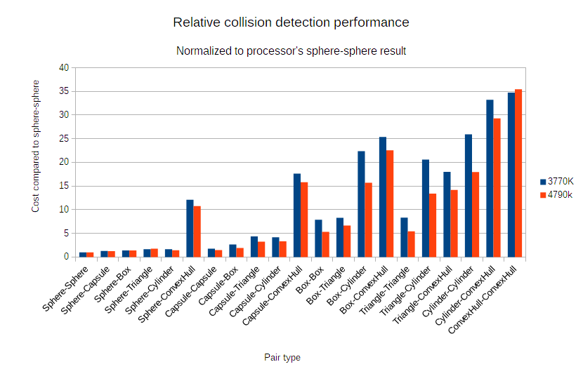
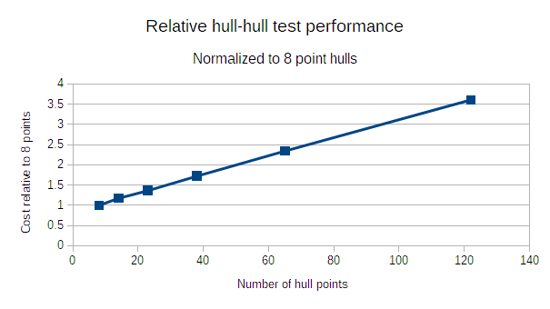

Performance Tips
General
-Large spikes in the time it takes to complete a timestep soon after application launch may be related to just-in-time compilation. If they become a problem, consider running a small simulation that hits all the relevant codepaths (like collision pairs and constraints) at load time. Using an ahead-of-time compilation toolchain would also work.
-If spikes keep happening, and especially if the spikes arise in the solver, the operating system may be having trouble with thread oversubscription and scheduling. If one of the physics worker threads gets idled by the OS while another task runs, it'll stall the whole engine. This can cause especially nasty problems on older operating systems. In these cases, it can be helpful to reduce the number of threads used by the engine to leave room for other processing.
Shape Optimization
-Use simple shapes whenever possible. Spheres and capsules are fastest followed by boxes, triangles, cylinders, and finally convex hulls. While cylinders and convex hulls are not slow in an absolute sense, they can be an order of magnitude slower than spheres and capsules.
The following chart shows the differences in convex collision pairs for a couple of different processors. The 4790K uses 8-wide instructions under RyuJIT, while the 3770K only uses 4-wide SIMD operations; this affects the relative performance of some pairs that are able to more fully take advantage of the greater throughput.
(Note that the times are measured relative to the processor's own sphere-sphere result. In absolute terms, the 4790K dramatically outperforms the 3770K, sometimes approaching twice as fast.)

The convex hulls in this test had 23 points and 42 faces. While you shouldn't be too afraid of cylinders and convex hulls (they're still pretty fast), it's hard to beat the simpler shapes. Many of the simpler pairs take less than 100 nanoseconds to evaluate.
Note that cylinders and convex hulls will likely become faster in the future.
-If you need to use a convex hull, use the minimum number of vertices needed to approximate the shape. The cost of hull collision detection is proportional to their complexity.

-For mobile concave shapes, first make sure they really need to be concave. Whenever you can get away with a simple convex shape, do so. If there's no choice, prefer using a compound of a minimum number of simple shapes like spheres and capsules rather than convex hulls (as per the earlier tip).
-If you really, definitely need a mobile mesh, especially one that needs to collide with other meshes, spend a while confirming that you really, definitely, seriously need it and there is no other option, and then use a compound of simple shapes instead.
-Okay, so maybe you actually truly really seriously need an actual mobile mesh. Keep the number of triangles to the minimum necessary to approximate the desired shape, and try to keep the triangles fairly uniform in size. Long sliver-like triangles can end up with large and inefficient bounding boxes. Static meshes follow the same optimization guidelines. Don't be surprised when you run into behavioral issues associated with infinitely thin one sided triangles not colliding with each other and relatively crappy performance.
-Reuse shapes when convenient. In particular, avoid creating tons of duplicate convex hulls and meshes. They are much larger than the other types. Both the required memory bandwidth and cache size can become a bottleneck during the narrow phase.
-Prefer using the same shape types when convenient. The narrow phase works on batches of same-type collision pairs at a time. By using a lot of the same types, the narrow phase can get better SIMD efficiency. (This is a fairly minor effect. If you kinda want to use a cylinder for something even though you haven't used them anywhere else, don't feel too bad about it.)
Solver Optimization
-Try using the minimum number of iterations sufficient to retain stability. The cost of the solver stage is linear with the number of iterations, and some simulations can get by with very few.
-For some simulations with very complex constraint configurations, there may be no practical number of solver iterations that can stabilize the simulation. In these cases, you may need to instead use substepping or a shorter time step duration for the entire simulation. More frequent solver execution can massively improve simulation quality, allowing you to drop velocity iteration counts massively (even to just 1 per substep). See the SubsteppingDemo for an example of substepping in action, and the Substepping documentation for more details.